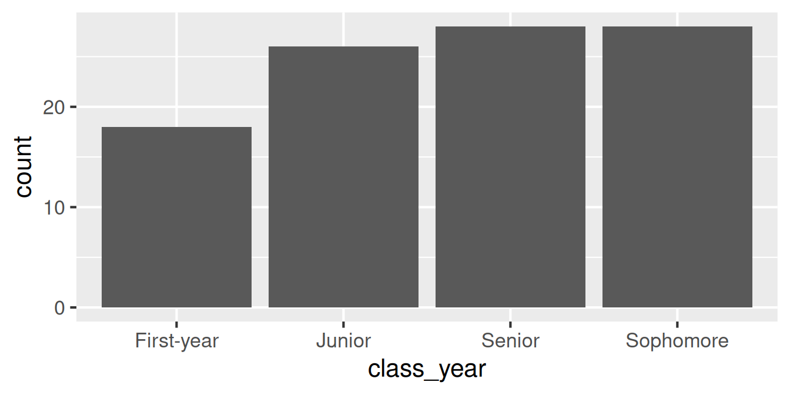

Data types and classes
Lecture 9
Duke University
STA 199 - Fall 2026
September 23, 2026
Warm-up
While you wait: Participate 📱💻
Fill in the blank:
On Wednesdays, I have _____ class(es), including STA 199.

Go to wooclap.com and use the code TJEJAXK.
Participate 📱💻
Which of the following best describes you?
- First-year
- Sophomore
- Junior
- Senior
Go to wooclap.com and use the code TJEJAXK.
Announcements
- Team preferences:
- Exactly 4 students per team
- Let me know in my office hours today or at the end of lab to your TA tomorrow
- All 4 members must be in attendance when submitting the preference
- No AI use in lab – work with your teammates and ask your TAs for help
Recap: The tidyverse package
When you load the tidyverse package, you get access to a suite of packages that work well together for data manipulation and visualization:
You never need to load one of these packages individually after you load the tidyverse, e.g.,
library(dplyr).
Recap: Loading packages
Only need to load a package once per R session or Quarto document.
Good practice: Load all packages you need at the start of your document, that’s why the templates I give you usually have a
load-packagescode cell at the top.Don’t load these packages again in the same document.
If you discover that you need a new package, go back and add it to the
load-packagescell.
Recap: Loading packages
❌ What not to do:
Recap: Pipes

This is not a pipe.
Recap: Pipes

This is not our pipe [operator].
Recap: Pipes

This is our a pipe [operator].
Recap: Pipes
❌ What not to do:
```{r}
#| label: family-sustaining-wage
nc_county %>%
filter(p_family_sustaining_wage < 0.5) %>%
count(county_type, name = "n_counties") %>%
arrange(desc(n_counties))
```
some content...
```{r}
#| label: edu-he-create
nc_county <- nc_county |>
mutate(
p_edu_he = p_edu_assoc + p_edu_ba + p_edu_mapl
)
```✅ What to do:
```{r}
#| label: family-sustaining-wage
nc_county |>
filter(p_family_sustaining_wage < 0.5) |>
count(county_type, name = "n_counties") |>
arrange(desc(n_counties))
```
some content...
```{r}
#| label: edu-he-create
nc_county <- nc_county |>
mutate(
p_edu_he = p_edu_assoc + p_edu_ba + p_edu_mapl
)
```Aside: The Itsy Bitsy Spider
🕷️ Any volunteers to sing (or just recite) a bit of the Itsy Bitsy Spider for us?
Recap: Data pipelines
Now that we all remember how The Itsy Bitsy Spider goes…
Piped: Read from top to bottom.
The pipe |> passes the result of each step to the next function as its first argument.
Recap: Data pipelines
Data types
Data types in R
- character:
"First-year"– Character strings - double:
2.5– Floating point numerical values (default numerical type) - integer:
3L– Integer numerical values (indicated with anL) - logical:
TRUEorFALSE– Boolean values - and some more, but we won’t be focusing on those
Vectors
Vectors can be constructed using the c() function.
- Numeric vector:
Vectors and their types
Why do we care about vectors and their types, especially when all we’ve worked with so far are data frames and their columns…
Each column of a data frame is (generally) a vector, and the type of that vector determines what operations can be performed on it or how it will behave when certain functions are applied to it. For example, you can’t take the mean of a character vector, but you can take the mean of a numeric vector.
Making vectors from vectors
We have a vector, x, of type character:
x <- c("a", "b", "c")
And another vector, y, of type double:
y <- c(1, 2, 3)
What happens if we combine them into a new vector, z <- c(x, y)? What type will z be?
- character
- double
- integer
- logical
Go to wooclap.com and use the code TJEJAXK.
Making vectors from vectors
Converting between types
with intention…
Converting between types
with intention…
Converting between types
without intention…
R will happily convert between various types without complaint when different types of data are concatenated in a vector, and that’s not always a great thing!
Converting between types
without intention…
Participate 📱💻
What is the output of typeof(c(1.2, 3L))?
"character""double""integer""logical"
Go to wooclap.com and use the code TJEJAXK.
Explicit vs. implicit coercion
Explicit coercion:
When you call a function like as.logical(), as.numeric(), as.integer(), as.double(), or as.character().
Implicit coercion:
Happens when you use a vector in a specific context that expects a certain type of vector.
Data classes
Data classes
- Vectors are like Lego building blocks
- We stick them together to build more complicated constructs, e.g. representations of data
- The class attribute relates to the S3 class of an object which determines its behaviour
- You don’t need to worry about what S3 classes really mean, but you can read more about it here if you’re curious
- Examples: factors, dates, and data frames
Factors
R uses factors to handle categorical variables, variables that have a fixed and known set of possible values
More on factors
We can think of factors like character (level labels) and an integer (level numbers) glued together
Dates
More on dates
We can think of dates like an integer (the number of days since the origin, 1 Jan 1970) and an integer (the origin) glued together
Data frames
We can think of data frames like like vectors of equal length glued together
Lists
Lists are a generic vector container; vectors of any type can go in them
Lists and data frames
- A data frame is a special list containing vectors of equal length
- When we use the
pull()function, we extract a vector from the data frame
Working with factors
Read data in as character strings
But coerce when plotting

Use forcats to reorder levels
A peek into forcats
Reordering levels by:
fct_relevel(): handfct_infreq(): frequencyfct_reorder(): sorting along another variablefct_rev(): reversing
…
Changing level values by:
fct_lump(): lumping uncommon levels together into “other”fct_other(): manually replacing some levels with “other”
…
Application exercise
ae-05-survey-types
Go to your ae project in Positron.
If you haven’t yet done so, make sure all of your changes up to this point are committed and pushed, i.e., there’s nothing left in your source control pane.
If you haven’t yet done so, pull to get today’s application exercise file:
ae-05-survey-types.qmd.Work through the application exercise in class, and render, commit, and push your edits by the end of class.